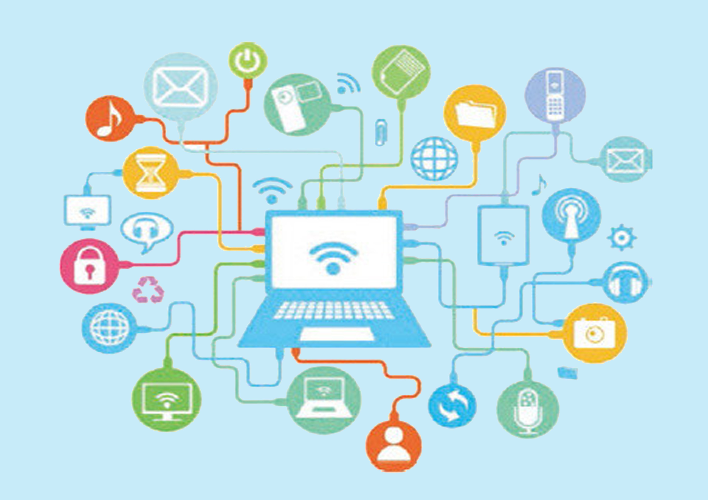
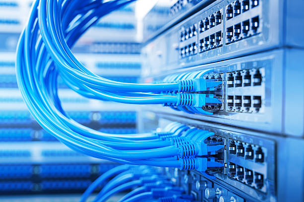
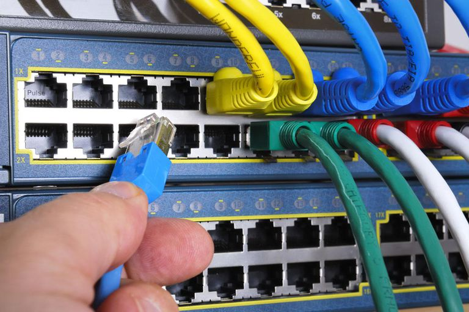
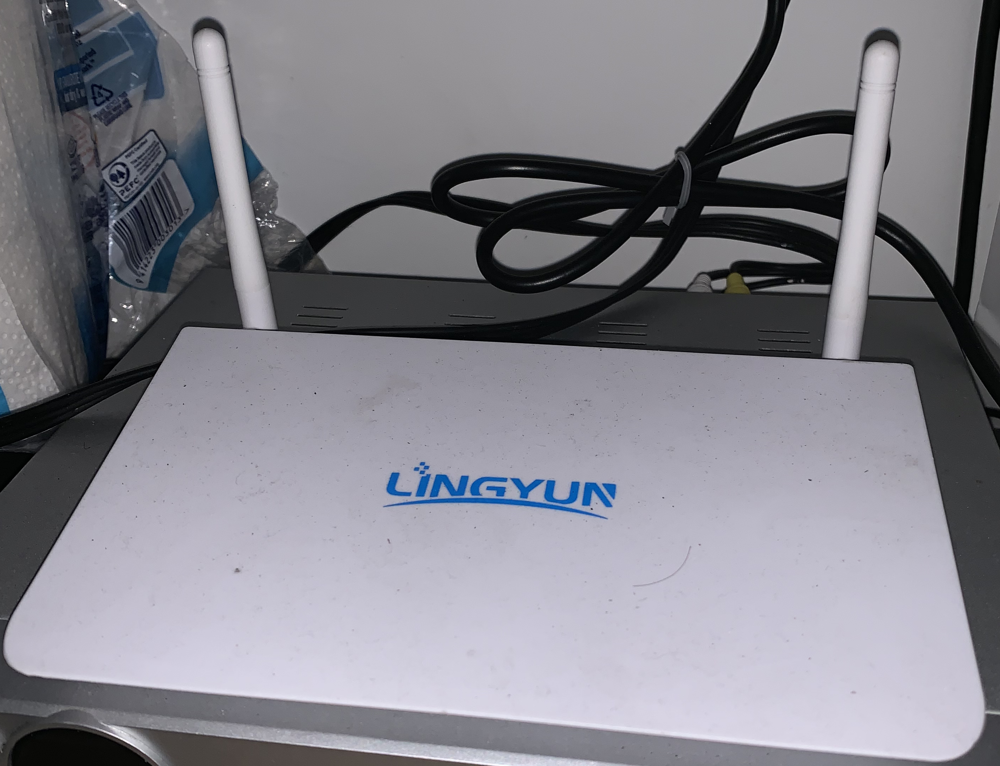
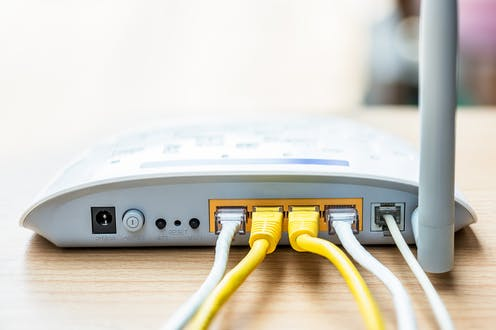
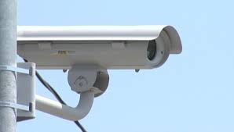
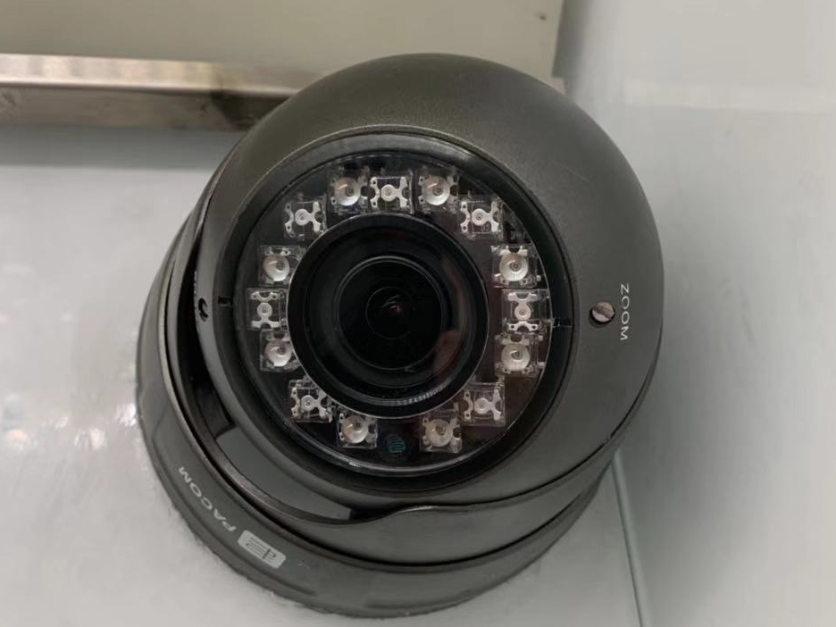

Network Cables
Router
IP Camera
Wellington Network



Ethernet Cables is a ubiquitous part of our lives.
It has become the most common medium for transfer of data in our society.
The role of the Ethernet cable is to connect a computer,
laptop or even game console to a router or modem. It sends and receives broadband signals,
so that computers can communicate with each other and transfer data from one to another.
It's one of the most common tools that computers use to transfer data across the Internet.
Also The Ethernet cable is one of the essential pieces of equipment in the physical layer of a network.
Older Ethernet set-ups utilized coaxial cables. Current networks use twisted pair or fiber optic cables.
The twisted pair cable is very commonly used in Ethernet computer network.
And the term "Ethernet cable" has come to directly refer to this particular type of cable.
when it uses a twisted pair copper cable to create a network. It solves a major problem of linking different
terminals with the power outlets. It can connect various units such as:
IP Digital Phone, Digital Cameras, LED Lighting, Smart Control Systems

What is Router?
A router is hardware device designed to receive, analyze and move incoming packets to another network.
It may also be used to convert the packets to another network interface,
drop them, and perform other actions relating to a network.

How it works?
a router connects devices within a network by forwarding data packets between them.
This data can be sent between devices, or from devices to the internet.
The router does this by assigning a local IP address to each of the devices on the network.
Most routers are manufactured by companies like Linksys, 3Com, Belkin, D-Link, Motorola,
TRENDnet, and Cisco, but there are many others.
New Zealand local companies have:spark, vodafone, 2 degress and Go Wireless NZ

What is IP Camera?
An Internet Protocol Camera, commonly referred to as an IP camera, is a digital video camera much like a webcam,
which transmits and receives data over a network or the internet.
Unlike an ordinary webcam it is a standalone unit with its own IP address that requires nothing more than
a network connection in order to transfer images.

how it work and what is the benefits?
IP cameras capture images in much the same way as a digital camera, and compress the files to transmit over
the network. IP cameras may be used with a wired network connected via ethernet cable to a broadband modem or router,
or wirelessly via a WiFi router.
The images captured by an IP camera may be viewed from anywhere in the world via the internet,
whether via pc, laptop or mobile phone. IP cameras are available for both indoor and outdoor use,
with both day and night functionality, and with the ability to pan or zoom either remotely or via operator command.
In Wellington, you will find that IP Camera is mostly used for road safety, looking for violations,
differential or escape.Or public safety of companies, shops, apartments, etc.